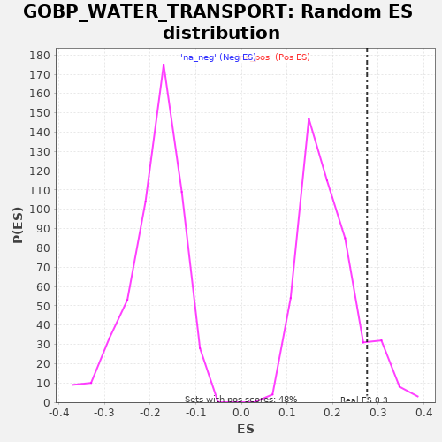

| | | Dataset | A_X_tradeoff |
| Phenotype | NoPhenotypeAvailable |
| Upregulated in class | na_pos |
| GeneSet | GOBP_WATER_TRANSPORT |
| Enrichment Score (ES) | 0.27539092 |
| Normalized Enrichment Score (NES) | 1.4589032 |
| Nominal p-value | 0.106471814 |
| FDR q-value | 0.7899796 |
| FWER p-Value | 1.0 |
Table: GSEA Results Summary
 Fig 1: Enrichment plot: GOBP_WATER_TRANSPORT
Fig 1: Enrichment plot: GOBP_WATER_TRANSPORT
Profile of the Running ES Score & Positions of GeneSet Members on the Rank Ordered List
| SYMBOL | RANK IN GENE LIST | RANK METRIC SCORE | RUNNING ES | CORE ENRICHMENT | | 1 | AQP11 | 237 | -0.001 | 0.0404 | Yes |
| 2 | AQP3 | 810 | -0.004 | 0.0636 | Yes |
| 3 | SLC5A1 | 1243 | -0.007 | 0.0940 | Yes |
| 4 | AQP6 | 1902 | -0.010 | 0.1128 | Yes |
| 5 | AQP2 | 2230 | -0.012 | 0.1486 | Yes |
| 6 | AQP8 | 2839 | -0.016 | 0.1700 | Yes |
| 7 | PDZD3 | 2955 | -0.017 | 0.2167 | Yes |
| 8 | INPP5K | 3266 | -0.019 | 0.2534 | Yes |
| 9 | MIP | 5554 | -0.040 | 0.1883 | Yes |
| 10 | AQP7 | 5646 | -0.041 | 0.2363 | Yes |
| 11 | AQP1 | 7650 | -0.068 | 0.1858 | Yes |
| 12 | SLC14A1 | 7724 | -0.069 | 0.2347 | Yes |
| 13 | HYAL2 | 7957 | -0.072 | 0.2754 | Yes |
| 14 | AQP9 | 9874 | -0.107 | 0.2294 | No |
| 15 | CFTR | 11287 | -0.139 | 0.2094 | No |
| 16 | AQP5 | 13404 | -0.197 | 0.1532 | No |
| 17 | HAS2 | 16284 | -0.321 | 0.0576 | No |
| 18 | UPK3A | 17336 | -0.399 | 0.0562 | No |
| 19 | AQP4 | 18984 | -0.763 | 0.0241 | No |
Table: GSEA details [plain text format]

Fig 2: GOBP_WATER_TRANSPORT: Random ES distribution
Gene set null distribution of ES for GOBP_WATER_TRANSPORT